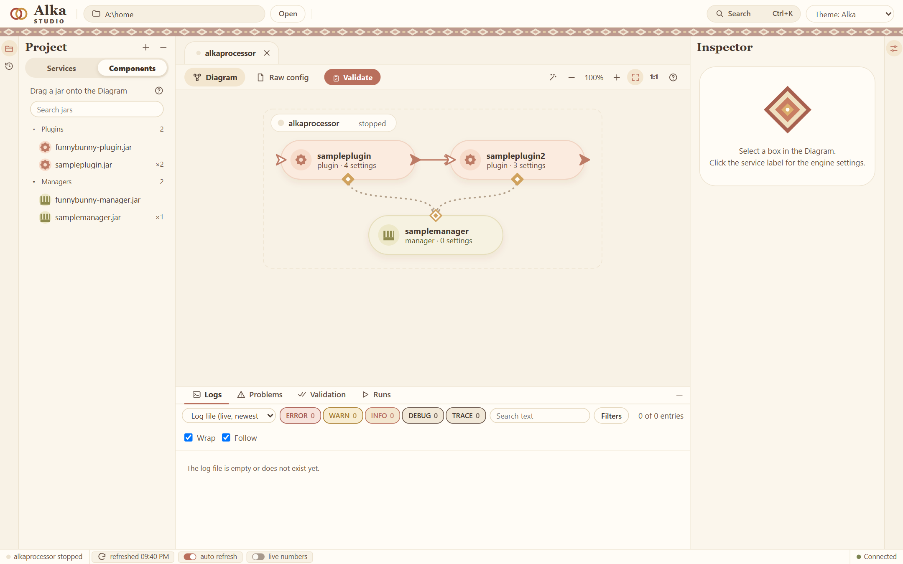
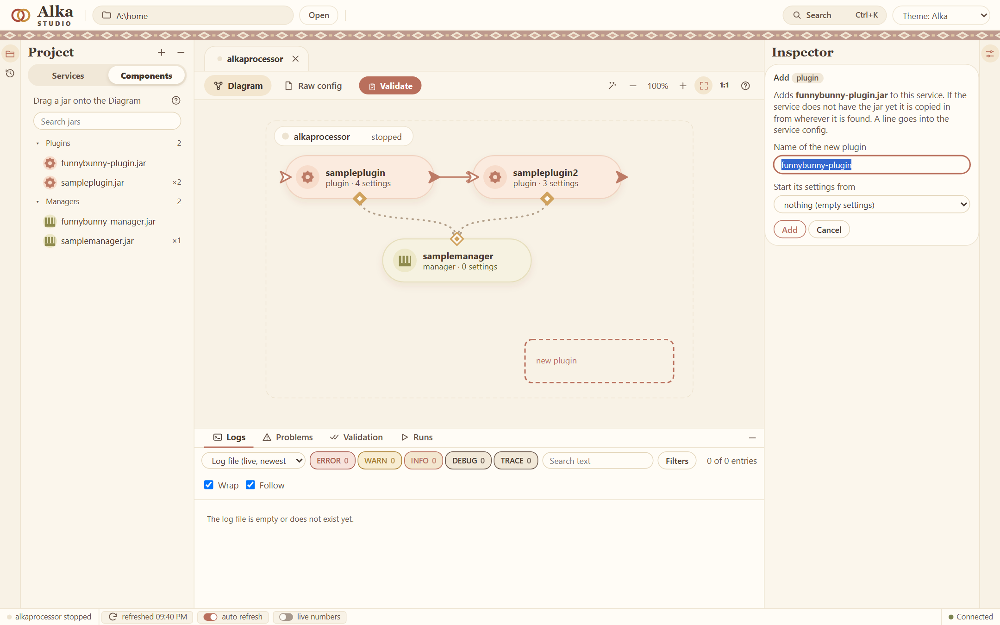
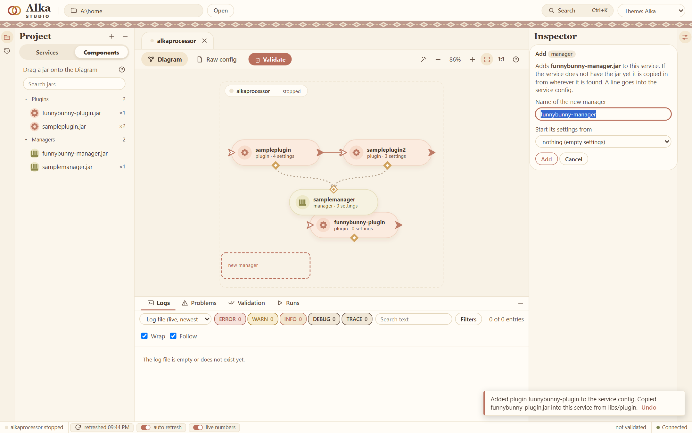
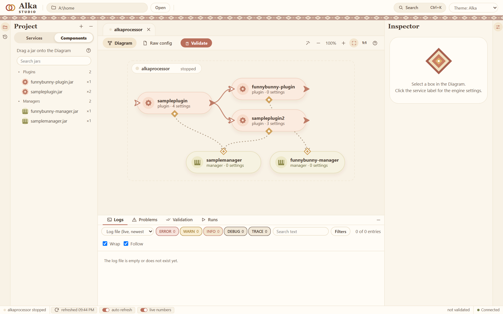
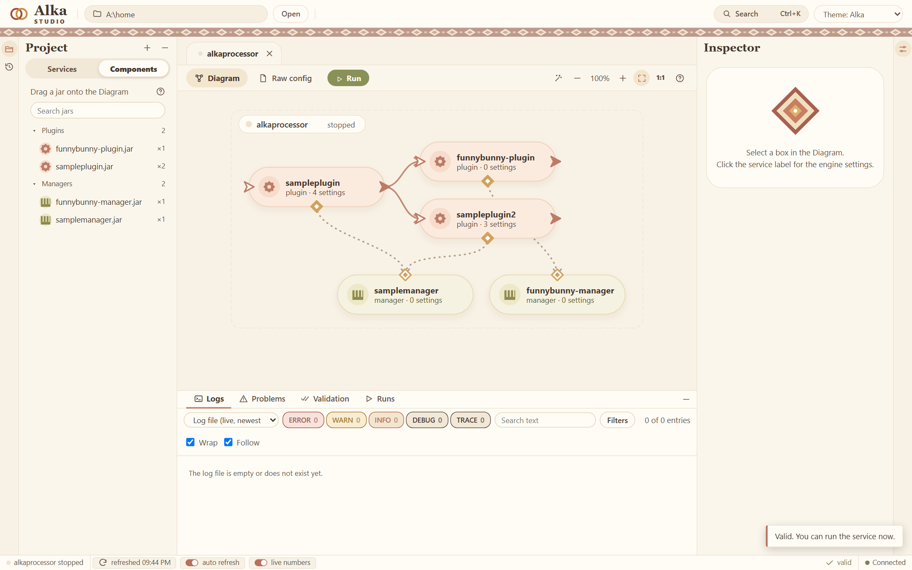
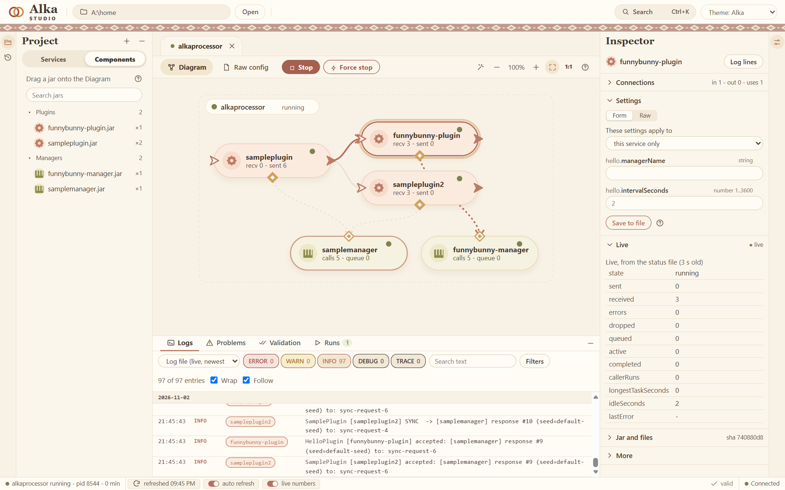
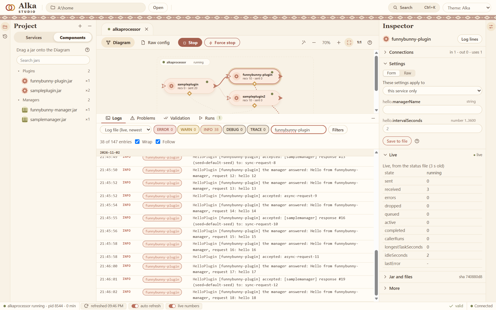

From an empty folder to a running plugin
The whole path in eight steps: make a project, build it, put it into Alka, add it to a service in the Studio, connect it, run it and read its log. It takes about ten minutes.
You need Java 21, Maven 3.9 and the unzipped Alka package. If you have never used Maven, Getting started shows how to install it. Type the commands in a terminal (on Windows the Command Prompt, not PowerShell).
1. Make the project
This makes a project with a manager, a plugin and a service, from a template (an archetype):
mvn archetype:generate -DarchetypeGroupId=com.alkadev -DarchetypeArtifactId=alka-sample-archetype -DarchetypeVersion=0.2.0Maven asks for a group id and an artifact id. Type com.example and funnybunny, and press Enter for the rest. You get a folder funnybunny.
2. Build it
cd funnybunny
mvn installAt the end Maven prints BUILD SUCCESS:
[INFO] funnybunny ......................... SUCCESS
[INFO] funnybunny-manager ................. SUCCESS
[INFO] funnybunny-plugin .................. SUCCESS
[INFO] funnybunny-service ................. SUCCESS
[INFO] BUILD SUCCESS3. Put it into Alka
The Alka package has a folder home. Give Maven its full path:
mvn package alka:deploy -Dalka.home=C:\alka-0.2.0\homeIt copies the jars of the manager and the plugin into the home, and the settings template of each one (the output is shortened):
[INFO] libs/plugin/funnybunny-manager.jar
[INFO] libs/plugin/funnybunny-plugin.jar
[INFO] config/templates/funnybunny-plugin.properties
[INFO] Alka deploy: 2 files copied into C:\alka-0.2.0\home.The project also made a small service of its own, funnybunny, and the deploy copies that too. Here we do something more useful: we add the new jars to the demo service that is already in the package.
4. Open the Studio
Start studio.bat (./studio.sh on Linux and macOS) in the package folder. In the Components tab on the left the two new jars are in the list: funnybunny-plugin.jar and funnybunny-manager.jar. The diagram is the demo service alkaprocessor.

5. Drag them onto the diagram
Drag funnybunny-plugin.jar from the list onto the diagram and let go. A panel on the right asks for a name. Keep it and press Add.

Do the same with funnybunny-manager.jar.

Each Add writes a line into the config of the service. The jar is copied into the folder of the service if it is not there yet.
6. Connect them
A line is drawn from one small mark to another:
- From the diamond at the bottom of
funnybunny-plugintofunnybunny-manager: the plugin uses that manager. - From the arrow on the right of
samplepluginto the arrow on the left offunnybunny-plugin: whatsamplepluginsends on goes to the new plugin.

sampleplugin and uses its own manager.The Studio wrote this into config/services/alkaprocessorConfig.properties for you. You could have typed the same four lines:
alkaprocessor.plugin.funnybunny-plugin=funnybunny-plugin.jar
alkaprocessor.manager.funnybunny-manager=funnybunny-manager.jar
alkaprocessor.addmanager.funnybunny-plugin=funnybunny-manager
alkaprocessor.map.sampleplugin=sampleplugin2,funnybunny-plugin7. Validate and run
Validate checks the config, the jars and the wiring and says in words what is wrong. Here it says the service is valid, and the button becomes Run.

Press Run. The service starts, and the boxes show numbers while it runs. Select funnybunny-plugin and the panel on the right shows its settings and its live state: here it has received three events.

funnybunny-plugin has received 3 events.8. Read the log
The log is below the diagram. Type funnybunny-plugin in the search field and only its lines are left. Every two seconds the plugin greets its manager and logs the answer, and every event that sampleplugin sends on shows up as accepted.

That is all. Press Stop when you are done.
What next
- Change what the plugin does: Your first plugin.
- Write the manager, the plugin and the service by hand, without the template: A manager, a plugin and a service from scratch.
- How the parts fit together: How Alka works.